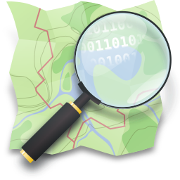

Helping communities in Khulna and Satkhira compare water sources, assess walking routes, and identify areas needing water infrastructure improvements.
66,234 households in coastal Khulna and Satkhira were examined for water-access conditions.
Coastal households lack reliable water for an average of 4.65 months per year, rising to 7.15 months in Paikgachha.
Women and girls in coastal Khulna and Satkhira spend 1.5 to 6 hours daily collecting water.
Drinking water containing more than 300 mg/L sodium is associated with a 3.3 to 5.5 times higher risk of gestational hypertension or preeclampsia.
16% of households have a water source on their own premises.
Some low-income families spend up to 20% of household income buying water.
21.6% of adults over 40 in Koyra and Assasuni had moderate-to-high estimated 10-year cardiovascular or stroke risk.
Helping coastal families find water and supporting organizations in planning better water infrastructure across Khulna and Satkhira.
Check which nearby wells, pumps, and water-treatment stations are reported as working or broken.
Compare available sodium measurements and flag water sources above the project's 300 mg/L screening threshold.
Find practical walking routes using roads, footpaths, and embankments instead of straight-line distances.
Estimate how heavy rain, seasonal shortages, and broken pumps can increase walking and waiting times.
Identify coastal communities with limited water access and estimate how many residents could benefit from new or repaired facilities.
Community health workers and NGOs can use the platform to support residents without smartphones or reliable internet access.
Identify coastal communities with limited water access and estimate how many residents could benefit from new or repaired water facilities.
Compare available sodium measurements to identify water sources with elevated salt levels or missing quality information.
Find reported working water facilities and compare practical walking distances and estimated travel times.
Estimate how broken pumps can increase walking distances and waiting times at nearby water stations.
Compare how heavy rainfall and seasonal water shortages affect water availability and estimated walking times.
Select your village or starting point on the map in coastal Khulna or Satkhira.
Find nearby wells, filters, and treatment stations and check their reported working status.
Compare available sodium measurements and estimate walking routes using mapped paths and roads.
Compare water quality, walking distances, travel times, and estimated waiting times before choosing a source.
Public datasets used to map water sources, assess water quality, and estimate access conditions in coastal Bangladesh.
18,873+ mapped water points
Groundwater chemistry records
Household water and health observations
Coastal salinity mapping
Historical climate and dry-season data

Roads, paths, rivers, and embankments
Xylem Watermark and Americares supported improvements to water, sanitation, and hygiene facilities in coastal Bangladesh.
Supported through water, sanitation, and hygiene improvements.
Reported patients and healthcare workers benefiting annually.
External Xylem–Americares initiative, not a JalDurbin project.
View Project Source